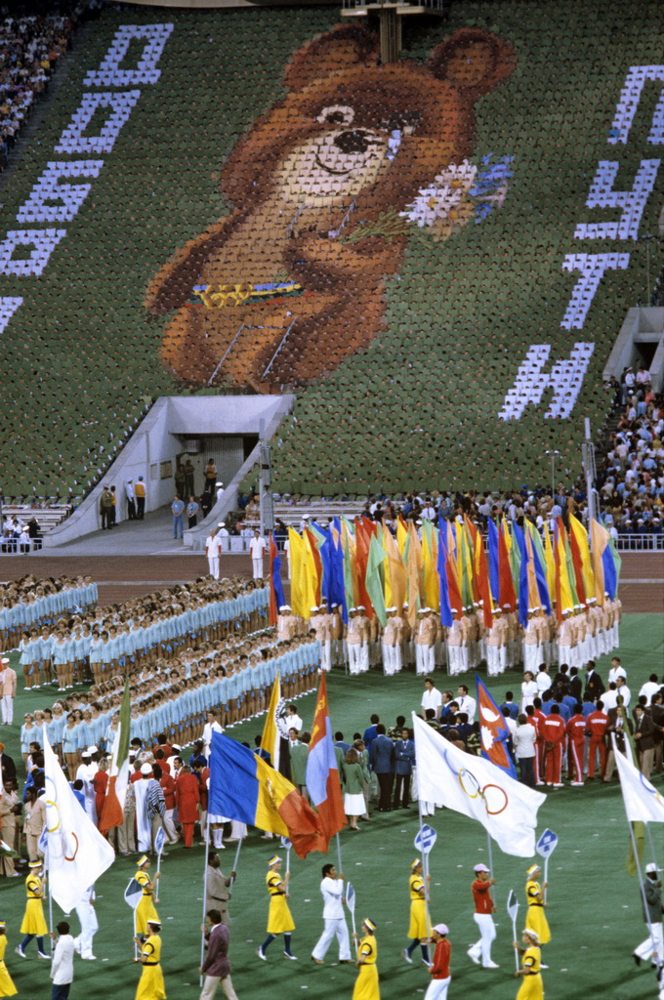

Летние Олимпийские игры 1980 года проходили в Москве, столице СССР, с 19 июля по 3 августа 1980 года. Это были первые в истории Олимпийские игры на территории Восточной Европы, а также первые Олимпийские игры, проведённые в социалистической стране.

7 февраля
2014
Зимние Олимпийские игры
На территории России Олимпийские игры прошли во второй раз (до этого в Москве в 1980 году прошли летние Олимпийские игры), и впервые — зимние Игры. По окончании Олимпийских игр на тех же объектах были проведены зимние Паралимпийские игры.